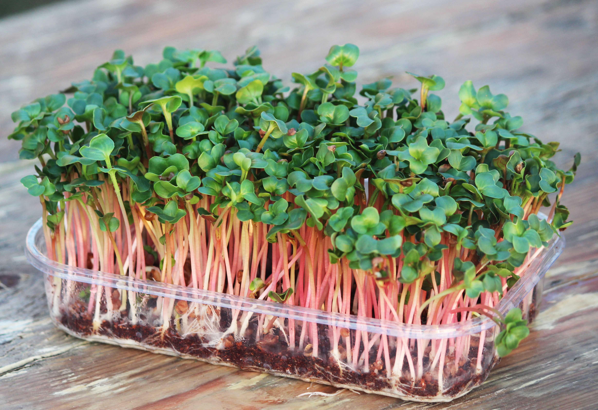
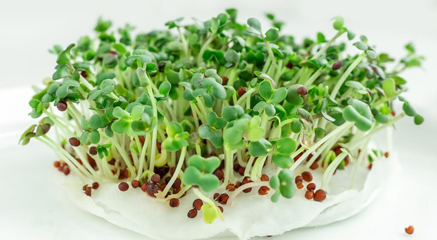

Микрозелень – это молодые побеги обычных растений, чаще всего – зелени и корнеплодов, реже – злаков. То есть следующая после проростков стадия формирования растений. Проведя ряд исследований, ученые поведали миру об их
непревзойденных полезных свойствах. По составу микрозелень примерно в 2–3 раза питательнее проросших семян, так как несколько недель растет в земле, преумножая свою ценность энергией почвы, солнечными лучами и обильным поливом.

Плюсы
- Экологически чистый продукт, так как растет дома, под личным контролем
- Всегда под рукой, удобно срезать по мере надобности
- Всегда свежая и хрустящая, нет привязки к сезонам
- Полезнее и нежнее обычной зелени
- Выстро растет
Минусы
- Требуется регулярный уход: Микрозелень требует постоянного внимания и ухода. Это включает в себя регулярный полив, контроль за освещением и вентиляцией.
- Ограниченный срок хранения: Микрозелень обычно имеет короткий срок хранения после уборки. Если не используется сразу после срезки, она может потерять свою свежесть и питательные свойства.
- Риск болезней и паразитов: При неправильном уходе или неподходящих условиях выращивания микрозелень может подвергаться атаке болезней и вредителей, что может привести к потере урожая.
- Управление освещением: Разместите контейнеры с микрозеленью на светлом месте, чтобы обеспечить им достаточное освещение. Используйте искусственное освещение в случае нехватки естественного света.
- Сбор и употребление: Когда растения достигнут оптимальной высоты, аккуратно обрезайте и используйте микрозелень в своих блюдах. Наслаждайтесь свежим и вкусным урожаем прямо из вашей кухни!
С чего начать выращивание микрозелени?
На рынке существует множество различных видов микрозелени.
Самыми популярными семенами для выращивания в домашних условиях стали салат,
капуста, шпинат, редис, свекла, кресс-салат, пряные травы, зеленные, мангольд,
капуста, горчица.

Также у некоторых потребителей популярны для микрозелени подсолнечник, гречиха, микрозелень гороха и даже микрозелень сосны и микрозелень из семян съедобных цветов.
Напомним! Для выращивания микрозелени нельзя использовать семена,
предназначенные для выращивания овощей.
Если вы не можете определиться с тем, когда микрозелень готова к сбору урожая, то просто посмотрите, появился ли у растений первый набор «настоящих листьев» (они же первичные листья – первые настоящие листья, образующиеся при прорастании семени, вслед за семядолями).
Два листочка означают, как правило, что уже можно собирать урожай. Возможно вы захотите подрастить растения чуть подольше, тут главное не переусердствовать. Как правило готовая к сбору микрозелень имеет высоту около пяти сантиметров.